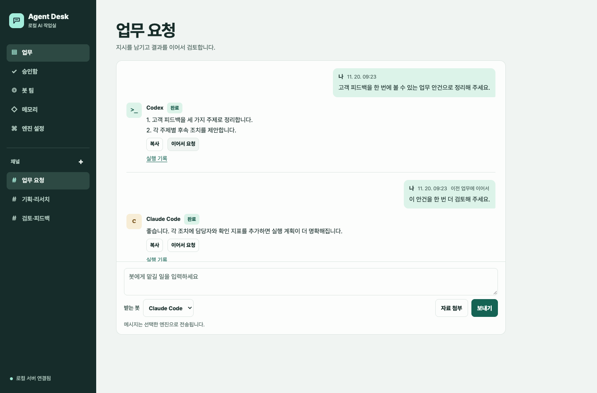

macOS · Apple Silicon
내 Mac의
AI 작업실
Codex와 Claude Code에 업무를 맡기고 승인, 결과, 후속 검토를 같은 채널에서 확인하세요. 각자 사용하는 CLI 로그인으로 실행합니다.
macOS용 ZIP 다운로드Node.js 24 이상 · Codex 또는 Claude Code 로그인

다운로드 후 실행
-
Finder에서 다운로드 열기
Finder 왼쪽의 다운로드를 누릅니다. 받은 ZIP을 두 번 클릭하고 agent-desk 폴더를 엽니다. 폴더가 이미 보이면 바로 열면 됩니다.
-
시작 파일 더블클릭
폴더 안의 Start Agent Desk.command를 두 번 클릭합니다. 잠시 후 기본 브라우저에 작업실이 열립니다.
앱을 사용하는 동안 자동으로 열린 터미널 창을 열어 둡니다.
-
기존 계정 확인
작업실의 엔진 설정에서 Codex나 Claude Code가 로그인됨으로 표시되는지 확인합니다.
처음 설치하는 경우
Node.js 공식 다운로드에서 macOS 설치 프로그램(.pkg)을 받아 Node.js 24 이상을 설치합니다.
Codex 설치 안내 또는 Claude Code 설치 안내 중 하나를 따라 계정으로 로그인합니다. 엔진 설정에서 연결 다시 확인을 누릅니다.
보안 경고가 나오거나 브라우저가 열리지 않는 경우
Mac이 개발자 확인 경고를 표시하면 파일을 받은 곳을 확인합니다. 해당 파일을 신뢰할 수 있으면 시스템 설정 → 개인정보 보호 및 보안 → 그래도 열기에서 열 수 있습니다. Apple 지원 안내
터미널에 실행 주소가 표시된 경우 내 Mac의 Agent Desk를 직접 엽니다. 이전 버전이 켜져 있으면 기존 터미널 창을 닫고 새 시작 파일을 두 번 클릭합니다.
업무에 활용하기
-
회의 메모 정리
업무 → 받는 봇에서 봇을 고르고 아래 예시의 대괄호를 내 메모로 바꿔 보냅니다.
아래 회의 메모를 결정 사항, 남은 질문, 다음 할 일로 정리해 줘. 메모에 없는 내용은 미정으로 표시해 줘. [회의 메모]
-
다른 봇에게 검토 넘기기
완료된 답변 아래 이어서 요청을 누르고, 받는 봇을 바꿉니다. 앞선 요청과 답변이 함께 전달됩니다.
앞선 답변에서 누락된 결정 사항과 실행 전에 확인할 가정을 찾아 줘.
-
반복 업무에 기준 재사용
메모리에 팀의 보고서 형식이나 검토 기준을 저장합니다. 다음 요청에서 자료 첨부로 필요한 메모리를 선택하고 승인함에서 확인한 뒤 실행합니다.
봇 설정 바꾸기 · 봇 팀 → 수정에서 역할과 엔진을 바꿀 수 있습니다. 모델은 선택한 엔진이 제공하는 목록에서 고릅니다.
문의하기
설치 오류, 사용 질문, 개선 제안을 남겨 주세요. 답변이 필요하면 회신 이메일을 함께 입력합니다.
문의 양식 열기